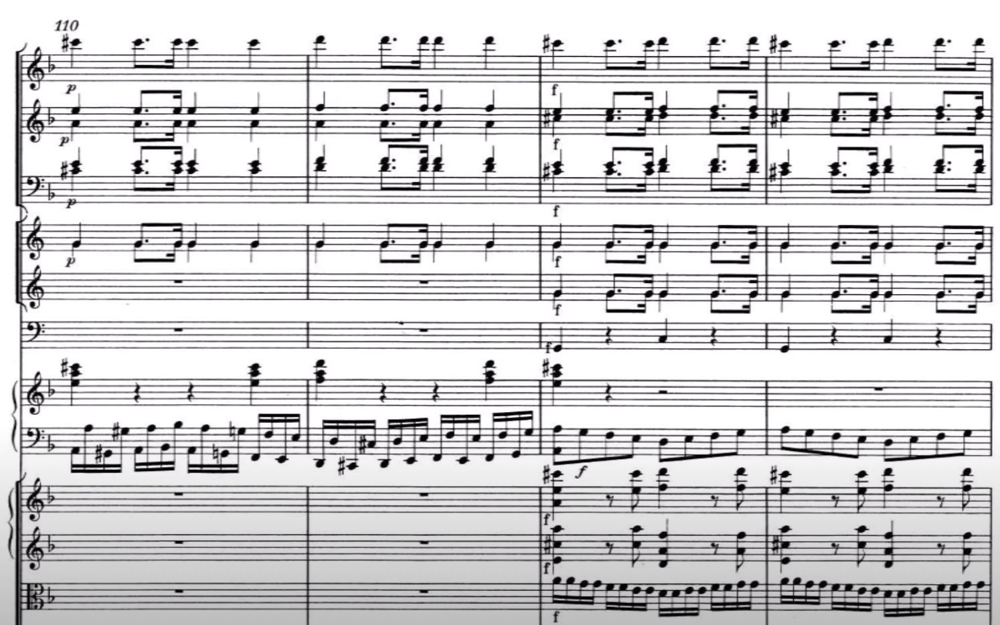
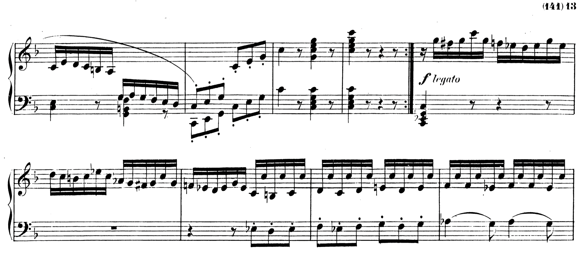

Wolfgang. Amadeus. Mozart.
What a name. What a guy! Perhaps the greatest composer of all time, this immature little wretch is responsible for a veritable library of composition which (along with Johann Sebastian) forms nothing less than the canonical foundation of Western Music.
Despite living half as long as the majority of his contemporaries, Mozart was able to match, if not exceed their compositional output. In order to do this, Mozart had to work faster and more efficiently than the average musical genius of the day. Because of this, while Mozart’s music echoes with the ideals of Stil Galant - charmingly elegant, peaceful - there are a select few moments where things go utterly off the rails. Punctuating the perfection, there is an innate urgency - a glimpse into the mind of the tortured genius - a rushing, pulsing mania; a plea against encroaching early death.
There is also a fun little piece called Leck mich im Arsch. I’m not going to translate that, but hopefully you can infer it’s meaning, and hence infer the incredibly feral nature of Wolfgang himself.
That aside, without further ado, here are the top five times our boy Wolfie went absolutely FERAL.
Number 5: Concerto for Piano and Orchestra (d-minor) K.466

Beloved by the romantics, this tempest of a concerto alternates between lilting swathes of tone, and violent outburst of rage quicker than you can say Nannerl. Note the incredibly difficult semiquaver octave lefthand!
Number 4: “Der Hölle Rache kocht in meinem Herzen” from Die Zauberflöte (The Magic Flute) K.620
This famous piece details the vengeful oath of a deranged queen mother. I suppose the quaint title of ‚ÄúHell‚Äôs vengeance boils in my heart‚Äù does not imply butterflies and rainbows. Don‚Äôt you love it when mom gives you a dagger and orders you to kill Sarastro and threats to disown you if you do not but Monostatos returns and tries to force your love by threatening to reveal the Queen‚Äôs plot but before the he can enter the temple he is cast out into eternal night? üòç
Number 3: Piano Sonata No. 8 in a-minor K.310

Relatively unknown, this gem of a sonata really hits different. There’s nothing quite like a resolute, pounding march, accompanied by frantic, descending base. We’re definitely loosing the plot now.
Number 2: Piano Sonata No. 12 in F major, K. 332

One of the best things about Mozart is his symmetry. This sonata starts off dolce, semplice - a elegant melody accompanied by a quaint alberti base. Nearing the final bars, things have definitely picked up - albeit still in a triumphant (barely in control) major. The surprise comes about halfway through the third movement. The original melody is repeated, transposed in a devastating f minor. Actual chills.
Number 1: The Requiem in D minor, K. 626
This piece is essentially a garguantuan, beserk, fever-dream; it is without a doubt Mozart’s most feral composition. Imagine it: one can all but feel the daggers of icy rain as one races through the sleeping streets of 16th-century Salzburg. Hacking into a bloody handkerchief, the vengeful spectre of one’s deceased father haunting the mind, one frantically pens the final bars of an unfinished Requiem, knowing it will be the soundtrack to one’s own funeral.
Forcing myself to choose one section to include here was torture - I might as well have included a pdf of the entire score. Yes, it is really that good. Go listen to it. Stop reading. Go. NOW!

Literally Day of Wrath, this piece is not something you would play at your 4 year old’s birthday party. It is evident from the first second of the piece that we might as well give up all hope in the face of obliteration and hellfire. Isn’t it marvelous!
Thank you for reading my selection of pieces. It’s very difficult for me to be rational and circumspect when listening to Mozart at his most feral, and so please forgive any lapses in judgement and/or fanboy ravings. If you would like to dispute me on these selections, please reach out to jstapleton17@apu.edu - for once, I AM open to suggestions.